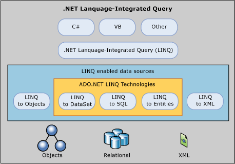

Le langage C# et le framework .NET :
D'après Christophe Mommer, développeur C# ayant écrit des livres dessus : Un développeur C#/.NET n'st pas expert sur toutes les technologies .NET !
.
D'après Christophe Mommer, développeur C# ayant écrit des livres dessus : Un développeur C#/.NET n'st pas expert sur toutes les technologies .NET !
.
Le langage C# (prononcé C Sharp) est un langage de programmation fortement typé, orienté objet et multi-plateforme.
Fortement typé : chaque élément appartient à un type tout au long de sa vie. Par exemple, si on déclare une variable pour y stocker un entier, on ne pourra JAMAIS y stocker une chaîne de caractères ou une date.
Orienté objet : approche du développement informatique où l'on peut créer des objets pour y stocker diverses informations.
Multi-plateforme : le code C# permet de réaliser des applications sur Windows; Mac, téléphone mobile, Web, ... et même votre télévision Samsung !
Le C# est compilé par un compilateur qui transforme le code C# en code IL (Intermediate Language).
Ce dernier est ensuite interprété par une machine virtuelle (le CLR) qui le transforme en instruction machine.
Le gros avantage d'un langage compilé : vérification du code à la compilation.
Le compositeur est votre MEILLEUR ami (et il optimise votre code).
Le langage de programmation contient un ensemble d'instructions de programmation (comme les conditions, boucles, etc.).
Il est fourni avec un framework, .NET, qui contint une collection d'outils prêts à l'emploi.
Il existe une version dédiée à Windows (.NET Framework 4.8) et une version multi-plateforme (.NET).
Le framework .NET 8 s'installe sur tous les systèmes d'exploitation récents (Windows 10/11, Mac OS, Linux).
Se rendre à l'URL https://dotnet.microsoft/com/download.
Télécharger la dernière version du SDK .NET (et non .NET Core ni .NET Framewrok).
Exécuter l'assistant d'installation.
Vérifier que l'installation s'est bien passée en tapant dans une invite de commande :
dotnet --versionLe SDK (Software Development Kit) installé contient le compilateur et le runtime.
Pour coder, il est possible d'utiliser :
Un éditeur de texte (non recommandé)
Visual Studio 2022 (Windows et Mac)
Visual Studio Code (Windows, Mac & Linux)
Rider (Windows, Mac & Linux)
Visual Studio Code est un éditeur de code gratuit et multi-plateforme suffisant pour notre apprentissage.
Se rendre à l'adresse https://code.visualstudio.com/ pour télécharger la dernière version sable correspondant à votre système d'exploitation.
Pour avoir tout le confort de travail, il faut configurer VS Code :
Installation de l'extension OmniSharp
Installation de l'extension Bracket Pair Colorizer
Installation de l'extension VS Sharper for C#
Un projet C# contient le code nécessaire pour créer une application.
Pour apprendre, nous allons commencer par créer une application Console.
Ouvrir VS Code dans un dossier défini.
Ouvrir le terminal de VS Code.
Écrire la commande :
dotnet new console -n MonPremierProjetLorsque le code est prêt, un programme C# est exécutable.
Dans notre cas, nous avons une application console, son exécution se passe donc dans un terminal.
Ouvrir le terminal de VS Code.
Au niveau du répertoire où se situe le fichier MonPremierProjet.csproj, écrire la commande :
dotnet runL'extension d'un fichier C# est ".cs".
La ligne est une instruction C# :
Console.WriteLine("Hello, World!");Décomposons cette instruction :
Console : objet à utiliser
. : accesseur à un élément de l'objet le précédant
WriteLine : méthode d'un objet
() : parenthèses pour passage de paramètres
"Hello, World!" : valeur du paramètre
; : point-virgule en fin d'instruction
Le commentaire commence par // comme dans l'exemple ci-dessous :
// See https://aka.ms/new-console-template for more informationLe commentaire permet d'écrire du texte libre à côté du code source (pour donner une indication quelconque).
Exercice : Écrire l'instruction C#, à la ligne de la première, permettant d'afficher "J'apprends le C#" :
Console.WriteLine("J'apprends le C#");En C#, le placement des accolades pour définir le corps des fonctions (méthodes) est une une question de style de codage. Il existe deux approches principales : avec les accolades à la ligne ou sur la même ligne que la déclaration de la fonction.
Accolades à la ligne (Allman Style) :
public void Exemple()
{
// Corps de la fonction
Console.WriteLine("Hello, World!");
}Accolades sur la même ligne (K&R Style) :
public void Exemple() {
// Corps de la fonction
Console.WriteLine("Hello, World!");
}Les deux styles sont acceptés par le compilateur C# et sont largement une question de préférence personnelle ou de convention d'équipe. Certains développeurs préfèrent l'un sur l'autre pour des raisons de lisibilité, de style, ou même d'adhésion à des normes de codage spécifiques.
Dans la suite du cours, on utilisera la première méthode car Visual Studio 2022 l'utilise, mais il est essentiel de choisir un style cohérent au sein d'un projet ou d'une équipe pour maintenir la lisibilité et la cohérence du code.
Une variable est une donnée que l'on souhaite stocker pour travailler, dont le contenu peut changer.
En C#; une variable est fortement typée, c'est-à-dire que son type est défini à sa déclaration et ne pourra pas changer.
La syntaxe pour déclare une variable est :
TYPE NOM + VALEUR;Quelques-uns des types les plus courants :
Entier → déclaration avec le mot clé "int".
La valeur est directement écrite en chiffres.
Chaîne de caractères → déclaration avec le mot clé "string".
La valeur est écrite entre guillemets.
Booléen → déclaration avec le mot clé "bool".
Peut seulement valor "true" (vrai) ou "false" (faux).
Le nom d'une variable ne peut pas contenir d'espace. Voici quelques exemples de déclaration de variables :
int age = 29;
string prenom = "Driss";
bool estVivant = true;Dans VS Code, ne prêter pas attention au soulignage. Il 'agit d'un avertissement du compilateur comme quoi une variable est déclarée mais non utilisée.
Il existe une syntaxe appelée "typage implicite" permettant d'utiliser un mot clé commun (var) pour que le compilateur devine le type en fonction de la valeur.
var NOM = VALEURAttention, en l'absence de valeur, le comilateur ne peut pas déduire le type, et il est donc illicite de faire uen instruction var NOM.
var taille = 172;
var nom = "Vandenheede";
var faux = false;La syntaxe pour affecter une variable est :
NOM = VALEUR;Cela impose que la variable ait été déclarée au préalable, sinon cela ne fonctionnera pas.
Ainsi, il est possible de chnager une valeur d'une variable après sa création.
taille = 200;Une constante est une donnée que l'on souhaite stocker pour travailler, dont le contenu ne changera jamais.
En C#, une constante est fortement typée c'est-à-dire que son type est défini à sa déclaration et ne pourra pas changer, tout comme sa valeur.
La syntaxe pour déclarer une constante est :
const TYPE NOM = VALEUR;Attention, le mot clé "const" est réservé au langage C# et ne peut pas être utilisé comme nom pour une variable ou une constante.
Voici quelques exemples :
const int valeur = 42;
const string pays = "Belgique";
const bool vrai = true;Une variable peut aussi être affectée par une valeur renvoyée par une fonction.
Par exemple, la fonction Console.ReadLine(); attends la saisie de l'utilisateur (finalisée par l'appui sur entrée) ey renvoie cette valeur.
Ainsi, on peut récupérer la valeur dans une variable en définissant l'affectation de la valeur comme étant l'appel de la fonction :
var saisie = Console.ReadLine();Le but de cet exercice simple est de demander le nom de l'utilisateur et de lui dire "Bonjour prénom".
Pour bien commencer :
Créer une nouvelle application console dédiée (dotnet new console).
Utiliser la méthode Console.WriteLine pour afficher une valeur : (note : la valeur entre parenthèses peut être une variable ou une constante).
Utiliser la méthode Console.ReadLine(); pour lire la valeur.
Console.WriteLine("Veuillez saisir votre prénom");
string saisie = Console.ReadLine();
Console.WriteLine("Bonjour");
Console.WriteLine(saisie);Bien que le langage se réserve des mots-clés pour les types, ceux-ci sont définis au sein du framework .NET.
Par exemple, il y a beaucoup de types différents pour représenter un chiffre, selon sa taille, le fait qu'il puisse être négatif ou non, ainsi que s'il peut avoir une virgule ou pas !
Voici une table de référence des types numériques :
| Type en c# | Type système | Suffixe | Taille mémoire | Plage |
|---|---|---|---|---|
| Types entiers signés | ||||
| sbyte | System.Sbyte | 8 bits | -27 à 27-1 | |
| short | System.Int16 | 16 bits | -215 à 215-1 | |
| int | System.Int32 | 32 bits | -231 à 231-1 | |
| long | System.Int64 | L | 64 bits | -263 à 263-1 |
| Types entiers non signés | ||||
| byte | System.Byte | 8 bits | 0 à 28-1 | |
| ushort | System.UInt16 | 16 bits | 0 à 216-1 | |
| uint | System.UInt32 | U | 32 bits | 0 à 232-1 |
| ulong | System.UInt64 | UL | 64 bits | 0 à 264-1 |
| Types réels | ||||
| float | System.Single | F | 32 bits | u -1045 à 1038 |
| double | System.Double | D | 64 bits | u -10324 à u 10308 |
| decimal | System.Decimal | M | 128 bits | u -1028 à u 1028 |
Les types entiers signés est utilisé lorsque la valeur peut être positif ou négatif.
Les types entiers non signés sont l'inverse des types entiers signés dont la valeur minimale est 0.
Les types réels est lorsque la valeur est avec une virgule.
Quelques détails supplémentaires :
Le type float ou double est recommandé pour les calculs mathématiques (hautre précision) alors que decimal est recommandé pour les calculs financiers.
Depuis C# 7, il est possible d'utiliser un séparateur pour les gros chiffres :
int unMilliard = 1_000_000_000;Le suffixe n'est obligatoire que ds'il existe une ambigüité :
var jeVeuxUnLong = 16UL // ici, par défaut, le type aurait été intNous avons déjà travaillé avec les chaînes de caractères :
Pour en définir une, il suffit de mettre la valeur entre guillemets :
string prenom = "Driss";Mais qui dit "chaîne" dit "ensemble", ainsi, il existe un type pour un caractère unique.
Pour en définir un, il suffit de mettre la valeur entre apostrophes :
char a = 'a';Attention, définir plusieurs caractères entre apostrophes, sauf exceptions ci-après, provoquera une erreur de compilation.
Certains caractères particuliers et nécessite un traitement particulier.
Le caractère ("\") est utilisé pour les définir.
Par exemple : le fait qu'une chaîne de caracyères soit entourées par des guillemets, comment est-ce que je peux avoir des guillemets dans ma chaîne ? Ou stocker le caractère apostrophe ?
Voici un tableau de références des caractères spéciaux :
| Car | Signification |
|---|---|
| \' | Apostrophe (dans un char) |
| \" | Guillemet (dans un string) |
| \\ | Antislash |
| \0 | Null |
| \a | Alerte (bip sonore) |
| \b | Retour arrière |
| \f | Saut de page |
| \n | Nouvelle ligne |
| \r | Retour chariot (entrée) |
| \t | Tabulation (découplage vers la droite) |
| \v | Tabulation verticale |
L'antislash peut aussi être utilisé pour représenter directement un caractère de la table Unicode : https://fr.wikipedia.org/wiki/Table_des_caractères_Unicode_(0000-0FFF).
char copyright = '\u00A9';La manipulation des chaînes de caractères offre des facilités d'échappement grâce à un syntaxe particulière.
Le caractère @ avant les guillemets d'ouverture permet de ne pas avoir à échapper les antislashs (mais empêcje l'utilisation des caractères spéciaux) :
string cheminWindowsSimple = @"C:\docs\fichier.txt";Dans ce cas, èle guillemet dans la chaîne doit être doublé :
string jacquesADit2 = @"Jacques a dit : ""Assis !""";Lorsqu'on utilise deux chaînes, il est possible de "mettre l'une dans l'autre" grâce à un procédé particulier : l'interpolation.
Le caractère "1" permet d'insérer une valeur entre accolades au sein d'une chaîne (généralement une variable) :
string prenom = "Driss";
string bonjour = $"Bonjour {prenom}";Dans ce cas, la variable bonjour contiendra "Bonjour Driss".
Le but de cet exercice simple est de demander le nom de l'utilisateur et son âge de lui dire "Bonjour prénom, vous avez âge ans".
Pour bien commencer :
Créer une nouvelle application console dédiée (dotnet new console).
Utiliser la méthode Console.WriteLine pour afficher une valeur : (note : la valeur entre parenthèses peut être une variable ou une constante).
Utiliser la méthode Console.ReadLine(); pour lire les valeurs.
Stocker le prénom et l'âge dans des variables et utiliser l'interpolation pour construire la phrase finale.
Console.WriteLine("Veuillez saisir votre prénom");
string prenom = Console.ReadLine();
Console.WriteLine("Veuillez saisir votre âge");
string age = Console.ReadLine();
Console.WriteLine($"Bonjour {prenom}, vous avez {age} ans");Les types vus jsuqu'à présent supportent l'utilisation d'opérateurs (comme l'addition ou la soustraction pour deux valeurs numériques).
Pour ce faire, on utilisera les caractères suivants :
"+" pour l'addition
"-" pour la soustraction
"*" pour la multiplication
"/" pour la division
"%" pour le modulo (reste de la division entière)
Le but de cet exercice simple est de manipuler les opérateurs avec les types numériques.
Pour bien commencer :
Créer une nouvelle application console dédiée (dotnet new console).
Créer deux variables contenant 9 et 2.
Faire la totalité des opérateurs mathématiques sur les numériques et constater les résultats !
9 + 2 = 11 // aucun commentaire
9 - 2 = 7 // aucun commentaire
9 * 2 = 18 // aucun commentaire
9 / 2 = 4
Nous divisons un entier par un entier, le résultat doit être entier. Nous avons ici le quotient d'une division Euclidienne. Le reste est calculé par la fonction modulo.
9 % 2 = 1
C'est le reste correspondant à notre division Euclidienne ci-dessus.
Dans le cas des chaînes de caractères, un opérateur a été implémenté afin de réaliser une concaténation.
Pour ce faire, on utilisera le caractère "+" afin de concaténer deux chaînes :
string bonjourChaine = "Bonjour " + "Driss";Cela a tout son intérêt lorsqu'on utilise des variables :
string bonjour = "Bonjour ";
string prenom = "Driss";
string bonjourComplet = bonjour + prenom;Le but de cet exercice simple est de demander le nom de l'utilisateur et son âge de lui dire "Bonjour prénom, vous avez âge ans".
Pour bien commencer :
Créer une nouvelle application console dédiée (dotnet new console).
Utiliser la méthode Console.WriteLine pour afficher une valeur : (note : la valeur entre parenthèses peut être une variable ou une constante).
Utiliser la méthode Console.ReadLine(); pour lire les valeurs.
Stocker le prénom et l'âge dans des variables et utiliser la concaténation pour construire la phrase finale.
Console.WriteLine("Veuillez saisir votre prénom");
string prenom = Console.ReadLine();
Console.WriteLine("Veuillez saisir votre âge");
string age = Console.ReadLine();
Console.WriteLine("Bonjour " + prenom + ", vous avez " + age + " ans");Rappel : un booléen est une valeur valant vrai (true) ou faux (false).
Ainsi, pour savoir si quelque chose est vrai ou faux, il faut une comparaison. Par exemple, on peut tester l'égalité grâce à l'opérateur "==" (attention, double égal) :
int a1 = 42;
int a2 = 43;
bool egaux = a1 == a2; // La variable "egaux" vaudra "false" ici.La différence se teste avec l'opérateur "!=" :
bool different = a1 != a2; // La variable "different" vaudra "true" ici.On peut utiliser également des opérateurs mathématiques traditionnels :
Supérieur à : utilisation du caractère ">"
Supérieur ou égal à : utilisation du caractère ">="
Inférieur à : utilisation du caractère "<"
Inférieur ou égal à : utilisation du caractère "<="
int a1 = 42;
int a2 = 43;
bool a1PlusGrand = a1 > 10; // Vaudra "true"
bool a2InfOuEgal = a2 <= 100; // Vaudra "true"Rappel : le langage C# est fortement type, il n'est pas possible de changer le type d'une variable déjà déclarée.
Il arrive que l'on ait besoin de convertir une variable d'un type A vers un type B, par exemple, transformer une chaîne de caractères en entier.
Il existe de nombreuses façons de créer une variable d'un aure type à partir d'une variable déjà définie.
Un des besoins les plus courants est d'obtenir une chaîne de caractères depuis un type quelconque.
Nous verrons pourquoi lorsque nous ferons le moddule sur la programmation orientée objet, mais chaque élément C# poss!de une méthode particulière : ToString().
Ainsi, il est possible de transformer un entier en chaîne comme ceci :
int valeurEntiere = 42;
string entierChaine = valeurEntiere.ToString();Lorsqu'on récupère une saisie d'un utilisateur, nous obtenons une valeur de type de chaîne de caractères.
Néanmoins, pour certaines opérations (comparaison avec un autre entier, addition...), il faut convertir cette valeur vers un entier.
Il y a plusieurs façons de faire cette opération.
Une classe très pratique, Convert, nous permet de transformer une valeur vers n'importe quel autre type, sous réserve que cela soit possible :
string valeurChaine = "29";
int vingtNeuf = Convert.ToInt32(valeurChaine);La classe Convert est très pratique, mais beaucoup de types exposent aussi une méthode appelée Parse, comme par exemple :
string saisie = Console.ReadLine();
int saisieEntier = int.Parse(saisie);Attention, au niveau de connaissance actuel, les deux alternatives peuvent être utilisées indistinctement.
Le but de cet exercice simple est de demander le nom de l'utilisateur et son âge de lui dire "Bonjour prénom, vous avez âge ans".
Pour bien commencer :
Créer une nouvelle application console dédiée (dotnet new console).
Utiliser la méthode Console.WriteLine pour afficher une valeur : (note : la valeur entre parenthèses peut être une variable ou une constante).
Utiliser la méthode Console.ReadLine(); pour lire les valeurs.
Stocker le prénom et l'âge dans des variables (string pour le prénom et int pour l'âge) et utiliser l'interpolation pour construire la phrase attendue.
Console.WriteLine("Veuillez saisir votre prénom");
string prenom = Console.ReadLine();
Console.WriteLine("Veuillez saisir votre âge");
int age = int.Parse(Console.ReadLine());
Console.WriteLine($"Bonjour {prenom}, vous avez {age} ans");Un booléen seul ne présente pas grand intérêt s'il n'est pas testé pour une branche de code.
À cet effet, le langage C# propose une instruction pour tester un booléen l'instruction "if".
Cette instruction a la syntaxe suivante :
if (booléen) // On teste la valeur booléenne entre parenthèses.
{
// On définit entre accolades le code à effectuer si le booléen vaut "true".
}Lorsqu'on teste une condition, il y a deux possibilités : vrai ou faux.
Le bloc défini après l'instruction ne sera exécuté que si la condition renvoie vrai.
On peut définir l'autre alternative grâce au mot-clé "else".
if (booléen) // On teste la valeur booléenne entre parenthèses.
{
// On définit entre accolades le code à effectuer si le booléen vaut "true".
}
else // On teste utiliser le mot-clé else pour dire "sinon".
{
// On définit entre accolades le code à effectuer si le booléen testé initialement vaut "false".
}Il existe également le mot-clé "else if" pour tester un autre booléen. Voici sa syntaxe :
if (booléen) // On teste la valeur booléenne entre parenthèses.
{
// On définit entre accolades le code à effectuer si le booléen vaut "true".
}
else if (autreBooléen) // On teste la valeur booléenne entre parenthèses. Ça signifie "sinon si".
{
// On définit entre accolades le code à effectuer si l'autre booléen vaut "true".
}
else // On teste utiliser le mot-clé else pour dire "sinon".
{
// On définit entre accolades le code à effectuer tous les autres booléens testés initialement valent "false".
}Le but de cet exercice simple est de demander le nom de l'utilisateur et son âge de lui dire "Bonjour prénom, vous avez âge ans".
Puis d'écrire si la personne est majeure ou mineure (l'âge de la majorité sera défini en constante).
Quelques indicatons :
utiliser if et else afin d'afficher uniquement la phrase correspondante.
Le test entre les deux valeurs peut être fait directement entre les parenthèses du "if".
const int majorite = 18;
Console.WriteLine("Veuillez saisir votre prénom");
string prenom = Console.ReadLine();
Console.WriteLine("Veuillez saisir votre âge");
int age = int.Parse(Console.ReadLine());
Console.WriteLine($"Bonjour {prenom}, vous avez {age} ans");
if (age >= majorite)
{
Console.WriteLine("Vous êtes majeur");
}
else
{
Console.WriteLine("Vous êtes mineur");
}On peut utiliser l'instruction switch pour sélectionner l'un des nombreux blocs de code à exécuter. Voici sa syntaxe :
switch (expression)
{
case x:
// bloc de code exécuté si "expression == x" est true.
break;
case y:
// bloc de code exécuté si "expression == y" est true.
break;
default:
// bloc de code exécuté par défaut s'il n'y a pas de correspondance de case.
break;
}Un booléen peut s'inverser grâce au caractère "!" :
bool estFaux = !true;Bien qu'un booléen ne puisse prendre que deux valeurs (vrai ou faux), la logique répond à l'algèbre de Boole.
Ainsi, il existe trois opérateurs en algèbre booléen :
LeET
Le OU
Le OU EXCLUSIF
Ces opérateurs prennent deux booléens pour en former un seul.
Les tales de résultats de ces opérateurs sont les suivantes :
| ET | TRUE | FALSE |
| TRUE | TRUE | FALSE |
| FALSE | FALSE | FALSE |
En C#, le caractère pour faire un ET est le "&"."
etVrai = true & true;
bool etFaux = true & false;| OU | TRUE | FALSE |
| TRUE | TRUE | TRUE |
| FALSE | TRUE | FALSE |
En C#, le caractère pour faire un OU est le "|".
bool ouVrai = false | true;
bool ouFaux = false | false;| OU EXCLUSIF | TRUE | FALSE |
| FALSE | FALSE | TRUE |
| TRUE | TRUE | FALSE |
En C#, le caractère pour faire un OU EXCLUSIF est le "^".
bool ouExVrai = true ^ false;
bool ouExFaux = true ^ true;L'opérateur & ou | seul implique que chacune des valeurs sera testée.
Lorsqu'on double l'opérateur (donc && ou ||), l'exécution s'arrêtera dès lors qu'une valeur rend la condition fausse.
Par exemple :
const bool vrai = true;
const bool faux = false;
if (faux == true & vrai == true)
{
}Les deux tests seront effectués.
Alors que...
const bool vrai = true;
const bool faux = false;
if (faux == true && vrai == true)
{
}Seulement le premier sera effectué.
Cet exercice est le début de l'implémentation de votre premier projet qui sera un jeu exécutable.
Ce jeu, c'est le nombre mystère : le joueur doit deviner le nombre caché en entrant une valeur.
Il s'agit ici d'implémenter la logique initiale :
Créer un nouveau projet dédié (appelons le NombreMystere).
Définir le nombre mystère en tant que constante.
Demander à l'utilisateur de deviner le nombre mystère.
Vérifier la valeur avec celle effective :
Si c'est plus grand, l'indiquer et lui dire qu'il a perdu.
Si c'est plus petit, l'indiquer et lui dire qu'il a perdu.
Si c'est le bon nombre , lui dire qu'il a gagné.
BONUS : demander en préambule le prénom du joueur pour le conserver, cela nous sera utile par la suite.
const int nbMystere = 7;
Console.WriteLine("Bienvenue dans le jeu \"Nombre mystère\"");
Console.WriteLine("Veuillez entrer votre prénom");
string prenom = Console.ReadLine();
Console.WriteLine("Veuillez entrer un nombre entre 1 et 10");
int nbSaisi = int.Parse(Console.ReadLine());
if (nbSaisi == nbMystere)
{
Console.WriteLine("Vous avez gagné !");
}
else
{
if (nbSaisi > nbMystere)
{
Console.WriteLine("Le nombre mystère est plus petit");
}
else
{
Console.WriteLine("Le nombre mystère est plus grand");
}
}Une collection est un ensemble de valeurs réunies.
Il existe un grand nombre de collections C#.
La première collection qu'on va étudier est la plus simple : le tableau.
Un tableau est un ensemble défini d'avance d'éléments du même type, c'est-à-dire qu'on ne pourra pas avoir un tableau qui mélange des chaînes de caractères et des entiers.
La syntaxe pour déclarer un tableau est d'utiliser des crochets ("[" et "]") après le type :
string[] tableauDeStrings = new string[10];Décortiquons la ligne ci-dessus :
string : type d'éléments dans le tableau.
[] : doubles crochets vides pour la déclaration du type.
new : utilisation du mot-clé "new" pour créer le tableau en mémoire.
[10] : doubles crochets avec la taille pour l'affectation de la valeur.
Comme on vient de le voir, un tableau doit être déclaré avec une taille initiale.
L'avantage de cette approche est qu'on est très précis sur la mémoire que l'on occupe.
L'inconvénient est que le tableau n'est pas facilement redimensionnable.
Pour accéder à un élément du tableau (en lecture comme en écriture), on utilisera un index, qui commence à O pour la 1ère position, que l'on placera entre les crochets après le nom de la variable :
tableauDeStrings[0] = "toto";
string toto = tableauDeStrings[0];Il est possible de définir les valeurs initiales du tableau en utilisant une syntaxe particulière :
TYPE[] NOM = new TYPE[x] { VALEUR1, VALEUR2, ..., VALEURX };int[] unACinq = new int[5] { 1, 2, 3, 4, 5 };La force du tableau est sa faible empreinte mémoire, il a une faiblesse indéniable qui est la difficulté de gérer sa taille facilement.
Bien heureusement, le framework .NET nous offre une autre type de collection : la liste.
De façon sous-jacente, la liste utilise un tableau, mais propose des facilités, car la taille est gérée de façon automatique.
Pour utiliser une liste, il faut écrire le code suivant :
List<TYPE> NOM = new List<TYPE>();La syntaxe est très particulière, car elle fait appel à deux notions que nous n'avons encore vues : la construction d'objet et les génériques.
Ces notions seront vues en détail plus tard afin de bien comprendre.
Par exemple, pour créer une liste de chaîne de caractères :
List<string> chaines = new List<string>();Décortiquons la ligne ci-dessus :
string : type d'éléments dans la liste.
<> : utilisation des chevrons pour encadrer le type.
new : utilisation du mot-clé "new" pour créer la liste en mémoire.
List<string> : reprise du type complet après le mot-clé "new".
() : double parenthèses comme l'appel d'une fonction.
La liste offre une fonction permettant de facilement ajouter un élément, la fonction Add.
chaines.Add("une valeur");La liste peut s'utiliser comme un tableau à l'aide des index (en mettant le chiffre dans les croches après le nom de la variable).
string valeurListe = chaines[0];Attention, comme le tableau, accéder à un index invalide provoquera un plantage du programme.
Il peut arriver qu'il est nécessaire de répéter une action un certain nombre de fois.
Par exemple, dans notre jeu, la partie s'arrête dès le premier essai.
Or, on souhaiterait peut-être donner plusieurs chances au joueur.
Pour ça, il faut utiliser une boucle. On peut créer une boucle :
Qui s'arrête sur la base d'une condition.
Qui effectue un nombre de tours défini d'avance.
Qui parcourt toutes valeurs d'une collection.
La boucle "for" est une boucle qui prend 3 éléments en considération :
Un état de départ.
Une condition de sortie.
Une fonction à exécuter à chaque pas.
Elle est généralement utilisée pour faire un nombre défini d'avance de tours.
Sa syntaxe est la suivante :
for (ÉTAT DE DÉPART ; CONDITION DE SORTIE ; FONCTION)
{
// Comme le "if", on mettra entre accolades le code à effectuer entre chaque tour de boucle.
}for (int i = 0; i < 10; i++)
{
// Comme le "if", on mettra entre accolades le code à effectuer entre chaque tour de boucle.
}Décortiquons le code ci-dessus :
for : mot-clé "for" de la boucle.
int i = 0 : état de départ.
; : attention, séparation par un ";".
i < 10 : condition de sortie.
i++ : fonction à chaque tour de boucle. Ici, c'est une post-incrémentation, c'est-à-dire que ça augmente de 1 la valeur de i.
Le but de cet exercice simple est de demander à un utilisateur de saisir 3 choses puis de les afficher sur chaque ligne.
Pour bien commencer :
Créer une nouvelle application console dédiée (dotnet new console).
Utiliser un tableau pour stocker les nombres.
Utiliser la boucle "for" afin d'afficher les éléments. Indice : l'index se trouve dans la boucle et change à chaque tour.
string[] valeurs = new string[3];
for (int i = 0; i < 3; i++)
{
Console.WriteLine($"Veuillez saisir la valeur {i + 1}");
valeurs[i] = Console.ReadLine();
}
for(int i = 0; i < 3; i++)
{
Console.WriteLine(valeurs[i]);
}La boucle "while" est une boucle qui considère une condition pour s'exécuter.
Tant que la conditon ne renvoie pas "false", la boucle dera des tours sans s'arrêter.
Sa syntaxe est la suivante :
while (condition)
{
// Comme le "for", on mettra entre accolades le code à effecteuer entre chaque tour de boucle.
}Attention, le compilateur ne vous préviendra pas si votre boucle est infinie !
int entier = 0;
while (entier < 10)
{
entier++;
}Décortiquons le code ci-dessus :
Le bloc d'instructions entre accolades sera exécuté tant que la condition ne sera pas égale à "false".
entier < 10 : condition qui sera évaluée à chaque tour.
Il existe également le mot clé "do ... while" dont voici la syntaxe :
int entier = 0;
do {
Console.WriteLine("entier = {0}", entier);
entier++;
} while (entier < 10);Ça permet d'exécuter au moins une fois le code entre accolades avant de tester la condition.
Le but de cet exercice est d'améliorer notre jeu du nombre mystère.
Jusqu'à présent, le joueur n'a qu'une seule tentative et doit relancer l'application.
Il faut transformer le jeu pour que le joueur puisse jouer jusqu'à ce qu'il ait gagné.
↕ une boucle "while" pour faire que le joueur puisse jouer tant qu'il n'a pas gagné.
const int nbMystere = 7;
Console.WriteLine("Bienvenue dans le jeu \"Nombre mystère\"");
Console.WriteLine("Veuillez entrer votre prénom");
string prenom = Console.ReadLine();
bool gagne = false;
while (!gagne)
{
Console.WriteLine("Veuillez entrer un nombre entre 1 et 10");
int nbSaisi = int.Parse(Console.ReadLine());
if (nbSaisi == nbMystere)
{
gagne = true;
Console.WriteLine("Vous avez gagné !");
}
else
{
if (nbSaisi > nbMystere)
{
Console.WriteLine("Le nombre mystère est plus petit");
}
else
{
Console.WriteLine("Le nombre mystère est plus grand");
}
}
}Bien qu'il soit possible de parcourir une collection en entier grâce aux boucles "for" et "while", il exitste une boucle particulière dédiée à cela.
La boucle "foreach" permet de prendre chacun des éléments d'une collection, un par un, afin d'effectuer une action.
La syntaxe est la suivante :
foreach (TYPE NOM in COLLECTION)
{
}foreach(int entier in unACinq)
{
}Disséquons le code ci-dessus :
Le bloc d'instructions sera exécuté pour chaque élément de la collection parcourue.
int : type de la variable qui sera déclarée localement.
entier : nom de la variable qui sera disponible dans le bloc de la boucle.
unACinq : collection à parcourir.
Le but de cet exercice est d'améliorer notre jeu du nombre mystère.
Jusqu'à présent, le joueur doit remonter dans l'historique du terminal afin de savoir quels chiffres il a déjà joués.
Nous allons améliorer l'interface graphique du jeu :
En stockant dans une collection la liste des chiffres déjà joués.
En nettoyant la console grâce à Console.Clear() entre chaque tour de jeu.
En affichant en début de tour la liste des chiffres déjà joués (utiliser la boucle "foreach").
const int nbMystere = 7;
Console.WriteLine("Bienvenue dans le jeu \"Nombre mystère\"");
Console.WriteLine("Veuillez entrer votre prénom");
string prenom = Console.ReadLine();
bool gagne = false;
List<int> nombresJoues new List<int>();
string indication = "";
while (!gagne)
{
Console.Clear();
Console.WriteLine(indication);
Console.Write("Nombres déjà joués : ");
foreach (int nb in nombresJoues)
{
Console.Write($" {nb} ");
}
Console.WriteLine();
Console.WriteLine("Veuillez entrer un nombre entre 1 et 10");
int nbSaisi = int.Parse(Console.ReadLine());
nombresJoues.Add(nbSaisi);
if (nbSaisi == nbMystere)
{
gagne = true;
Console.WriteLine("Vous avez gagné !");
}
else
{
if (nbSaisi > nbMystere)
{
indication = "Le nombre mystère est plus petit";
}
else
{
indication = "Le nombre mystère est plus grand";
}
}
}Lorsqu'un programme C# rencontre une erreur à l'exécution, l'application cesse de fonctionner si cette erreur n'est pas gérée.
Cela s'appelle une exception.
Par exemple, le code suivant provoquera une erreur à l'exécution si l'utilisateur ne saisit pas un chiffre valide :
string saisie = Console.ReadLine();
int saisiEntier = int.Parse(saisie);Il est heureusement possible de gérer les erreurs en utilisant un mécanisme particulier : try-catch.
Ce mécanisme est défini comme suit :
try
{
// Bloc contenant le code à "essayer".
}
catch
{
// Bloc contenant le code en cas d'erreur.
}
finally
{
// Bloc contenant le code à exécuter s'il y a une erreur attrapée ou pas.
}Le but de cet exercice est d'améliorer notre jeu du nombre mystère.
Jusqu'à présent, le joueur peut saisir une valeur différente d'un entier et faire planter l'application.
Nous allons améliorer le comportement du jeu :
Si l'utilisateur saisit un chiffre, continuer le déroulé classique du jeu.
Si l'utilisateur saisit une autre valeur, afficher un message sur la console lui demandant de corriger sa saisie avant de continuer.
const int nbMystere = 7;
const int nbMin = 1;
const int nbMax = 10;
Console.WriteLine("Bienvenue dans le jeu \"Nombre mystère\"");
Console.WriteLine("Veuillez entrer votre prénom");
string prenom = Console.ReadLine();
bool gagne = false;
List<int> nombresJoues new List<int>();
string indication = "";
while (!gagne)
{
Console.Clear();
Console.WriteLine(indication);
Console.Write("Nombres déjà joués : ");
foreach (int nb in nombresJoues)
{
Console.Write($" {nb} ");
}
Console.WriteLine();
int nbSaisi = 0;
while (nbSaisi < nbMin || nbSaisi > nbMax)
{
Console.WriteLine($"Veuillez entrer un nombre entre {nbMin} et {nbMax}");
try
{
nbSaisi = int.Parse(Console.ReadLine());
}
catch
{
nbSaisi = 0;
}
}
nombresJoues.Add(nbSaisi);
if (nbSaisi == nbMystere)
{
gagne = true;
Console.WriteLine("Vous avez gagné !");
}
else
{
if (nbSaisi > nbMystere)
{
indication = "Le nombre mystère est plus petit";
}
else
{
indication = "Le nombre mystère est plus grand";
}
}
}Le contenu jusqu'à présent a été dense, et avant de poursuivre, il faut vous assurer que vous maîtrisez les points suivants :
La différence entre une variable et une constante.
Le typage en C#.
Les opérations sur les numériques, chaînes de caractères et booléens.
Les tests avec if et else.
La connaissance élémentaire des collections basiques (tableau et liste).
Les boucles for, while et foreach.
La gestion des erreurs avec try.catch.
.NET a fortement évolué ces dernières années, avec l'arrivée de nouvelles solutions et de nouveaux frameworks.
Les nouveaux arrivants, les recruteurs et même quelques habitués ont perdus leurs repères.
À l'origine, quand .NET est sorti, c'était sous la forme de .NET Framework : une solution de développement sous Windows, exclusivement.
Il y avait 3 solutions : des librairies (faire des DLL), des applications graphiques (tout d'abord WinForms, puis plus tard WPF) et du web (ASP.NET WebForms, puis ASP.NET MVC).
Il y a eu des problèmes : .NET a été ré-implémenté en open-souce sous le nom Mono, notamment pour ASP.NET. Linux est majoritaire sur les serveurs, et ASP.NET n'était pas compatible.
Avec l'arrivée de Windows 10, Microsoft investit sur un nouveau CLR ; CoreCLR.
Suite à cela, .NET est open-source avec la création de .NET Core 1.0.
Mais .NET Framework existe tourjous. .NET Core et .NET Framework partagent un sous-ensemble commun (en dehors du langage).
Microsoft a créé un standard, .NET Standard, qui est la définition d'un sous-ensemble du framework comme un standard, accessible aussi bien en .NET Core qu'en .NET Framework (il y a eu 9 versions, en fonction des plateformes et des versions du framework...).
Pour résumer, .NET Core est la version open-source multi-plateforme, .NET Framework est la version Windows et .NET Standard est la définition de ce qui est commun entre les différentes versions .NET.
Afin de supprimer les incohérences, Microsoft annonce un nouveau .NET, qui se base sur .NET Core, et qui doit devenir "la seule façon de faire .NET".
On commence à la version 5, car .NET Core est en 3.1 et .NET Framework en 4.8.
Avec .NET on peut faire du web (ASP.NET, Blazor), du Machine Learning (ML.NET), de l'IOT (Runtimes optimisés), des apps Windows (WinForms, WPF, WinUI), des jeux vidéos (Unity) et du mobile (Xamarin, MAUI).
Il existes différents frameworks.
ASP.NET est dorénavant disponible :
Razor Pages, pour faire des applications "classiques" (comme PHP, mais avec C#).
MVC, pareil que ci-dessus, mais avec le pattern du même nom.
WebAPI, pour faire des APIs (existe en MVC et Minimal APIs).
Blazor, pour faire des SPA (existe en version Serveur et WebAssembly).
Xamarin : Approche historique → C# compilé en natif.
Xamarin Forms : Surcouche graphique pour des composants unifiés.
MAUI : Réécriture de Xamarin pour standardiisation et offrir plus de destination.
Pour les applications Windows, il y a WinForms (Approche historique, toujours valide), WPF (Propulsé avec Windows Vista) et WinUI (Successeur d'UWP, exclusivement pour Win 10/11 (store)).
Les conventions C# :
Nom des champs → _champ
Méthode → Commence par une lettre majuscule
Attention Main
C# utilise des propriétés plutôt que getter/setter.
Propriété en Majuscule !
private readonly DateTime _dateDeNaissance;
public DateTime DateDeNaissance
{
get { return _dateDeNaissance; }
}Propriéts simples auto-implémentées :
public DateDeNaissance { get; set; }Le package est une organisation physique et logique et le namespace est une organisation logique.
C# utilise un mécanisme d'annotations qui est notamment utilisé pour la sérialisation. Les annotations sont placées entre []. Par exemple : [Serializable].
Les interfaces commencent par un "I" (ex : IList, IDictionnary). Implements et Extends se traduisent tous les deux par le caractère ":".
Les collections disposent d'une classe de base qui correspond au nom de l'interface sans le "I" (ex : List, Dictionnary, ...).
Lors l'héritage en Java, toutes les méthodes sont "virtual", c'est-à-dire qu'elles peuvent être redéfinies dans les classes enfants et que le type de l'objet est recherché à l'exécution.
Lors de l'héritage en C#, par défaut les méthodes ne sont pas "virtual", c'est-à-dire que le type de l'objet à l'exécution sera la classe la plus haute dans la hiérarchie.
Si on veut le même comportement qu'en Java, virtual (parent) et override (enfant).
Comme en Java, C# possède un Iterator : IEnumerator. La proriété GetEnulmerator sur les listes, dictionnaires, ...
Pour boucler l'itérateur, il existe la méthode it.MoveNext() (hashNext + next en Java)
Pour trouver l'objet courant, il y a la propriété it.Current.
LINQ (Langauage Integrated Query) est une innovation de la version 3.5 du .NET Framework qui permet de rapprocher le monde des objets et le monde des données.
Le Framework .NET 4.0, quant à lui, a implémenté une nouvelle couche à LINQ. Cette nouvelle couche appelée PLINQ, pour "Parallel LINQ", est un complément à "LINQ To Objects" qui implémente un jeu complet de méthodes afin de combiner la simplicité et la lisibilité de la syntaxe LINQ et la puissance de la programmation parrallèle.
Dans de nombreux scénarios, PLINQ peut ainsi augmenter considérablement la vitesse des requêtes "LINQ To Objects", sur de gros volumes de données, en utilisant plus efficacement tous les coeurs disponibles sur l'ordinateur hôte.
Cette performance accrue apporte une puissance de calcul haute performance sur le Bureau.
Cependant, l'utilisation de PLINQ pour des petits volumes de données est déconseillée en raison des ressources mises en place pour la gestion parallèle qui, au final, risquerait d'alourdir votre application.
Traditionnellement, lorsque nous souhaitons réaliser des requêtes sur des données, ces dernières étaient exprimées sous forme de chaînes de caractères sans possibilité de vérification à la compilation et sans prise en charge par "l'IntelliSense".
En outre, nous devions apprendre des langages complémentaires en fonction des sources de données (XPath, SQL, TSQL, PL/SQL, ...).
Avec LINQ, toute requête prendra la forme d'une construction de langage de premier ordre (C# ou VB). De plus, nous pourrons écrire ces requêtes en utilisant des mots clés du langage et des opérateurs familiers.
LINQ a été prévu pour travailler pour travailler avec différentes sources de données :
Collections d'objets fortement typées (LINQ To Objects)
Fichiers XML (LINQ To XML)
Bases de données SQL Server (LINQ To SQL)
Groupes de données ADO.NET (LINQ To DataSet)
Groupes de données ADO.NET Entities Framework (LINQ To Entities)
Ce mot clé est probablement le plus important qu'à apporter LINQ et, bien que nécessaire, le plus controversé aussi.
En effet, C# et VB (en mode "Strict") étant des langages "fortement typé", chaque variable doit être déclarée avec un type avant d'être instanciée. Or, le mot clé "var" permet de déclarer des variables dont le type sera implicitement donné par le compilateur lors de la compilation.
Si le mot clé "var" est utilisé, la variable doit être instanciée lors de sa déclaration.
static void Main(string[] args)
{
int i = 5;
var s = "Hello World !";
var o = new object();
Console.WriteLine("{0} {1} {2}", i, s, o);
Console.ReadLine();
}Bien que l'utilisation du mot clé "var" soit permise, il n'en reste que son utilisation abusive risque de nuire à la compréhension du code. Sans oublier que cela implique que nous laisserons le compilateur choisir implicitement, pour nous, le type de la variable.
Ce qui en soit pourra poser des problèmes dans le cadre des valeurs littérales et dans le cadre du polymorphisme pour ne citer qu'eux.
static void Main(string[] args)
{
var i = 5;
var s = "Hello World !";
var o = new object();
Console.WriteLine("{0} {1} {2}", i, s, o);
Console.ReadLine();
}i sera de type "System.Int32".
Par conséquent, lorsque nous connaissons le type à utiliser, nous devrons utiliser ce type plutôt que "var".
Mais, alors pourquoi avoir ajoutée un type "fourre tout" dans un environnement "fortement typé" ?
Car LINQ étant un langage puissant, et il se peut que la requête retourne un type qui ne sera connu que lors de la compilation. Ces types sont appelés "Type anonyme".
public class Contact
{
public string Nom { get; set; }
public string Prenom { get; set; }
public string Email { get; set; }
}On peut remarquer que, dans LINQ, la convention de nommage des propriétés d'une classe suit généralement les conventions de nommage des propriétés en C#. Selon la convention de style courante en C#, les noms des propriétés commencent par une majuscule (PascalCase).
static void Main(string[] args)
{
List<Contact> Contacts = new List<Contact>();
Contacts.AddRange(new Contact[] {
new Contact() { Nom = "Person", Prenom="Michael", Email="michael.person@cognitic.be"},
new Contact() { Nom = "Morre", Prenom="Thierry", Email="thierry.morre@cognitic.be"}
});
// On ne prend que le Nom et l'Email du Contatct en créant implicitement un nouveau type.
// Ce "nouveau type" est un type anonyme.
var InfosDeContactsChoisies = from Contact c in Contacts
select new { Nom = c.Nom, Email = c.Email };
foreach (var Infos in InfosDeContactsChoisies)
{
Console.WriteLine("{0} {1}", Infos.Name, Infos.Email);
}
Console.ReadLine();
}Une expression "LAMBDA" est une fonction anonyme qui peut contenir des expressions et des instructions, cette expression pourra être utilisée pour créer des délégués (delegate) ou des types d'arborescence d'expression.
Toutes ces expressions utilisent l'opérateur LAMDBA "=>" qui se lit "conduit à".
class Program
{
delegate int del(int i);
static void Main(string[] args)
{
del Mydelegate = x => x * x;
int j = Mydelegate(5);
Console.WriteLine(j);
Console.ReadLine();
}
}Dans l'exemple, nous lirons "x conduit à x fois x".
Le côté gauche de l'expression spécifie les paramètres en entrée (le cas échéant) et le côté droit contient le bloc d'expression ou d'instructions.
Une expression LAMBDA avec une expression sur le côté est appelée "lambda-expression.
Les "lambda-expression" sont utilisées dans la construction d'arborescences d'expression, elle retourne le résultat de l'expression et prend la forme suivante : (Paramètres d'entrée) => expression.
Les parenthèses sont facultatives uniquement dans le cas où nous n'avons qu'un seul paramètre.
Dans le cas contraire, elles sont obligatoires :
class Program
{
delegate long Addition(int x, int y);
static void Main(string[] args)
{
Addition MonAddition = (x, y) => (long)x + y;
long j = MonAddition(5, 7);
Console.WriteLine(j);
Console.ReadLine();
}
}Si l'expression ne reçoit aucun paramètre, nous le signalerons par des parenthèses vides.
class Program
{
delegate bool del();
static void Main(string[] args)
{
del Mydelegate = () => UneMethode();
Console.WriteLine(MyDelegate());
Console.ReadLine();
}
static bool UneMethode()
{
bool Result = true;
// ... traitement
return Result;
}
}Nous remarquons aussi dans cet exemple que le corps d'une expression "LAMBDA" peut se composer d'un appel de méthode.
Il existe un autre type d'expression "LAMBDA", celle qui ont à droite un bloc d'instruction.
Elles sont appelées "lambda-instruction". Une "lambda-instruction" est similaire à la "lambda-expression", sauf que les instructions sont mises entre accolades.
Bien que le corps d'une "lambda-instruction" puisse contenir une infinité d'instructions; dans la pratique ce nombre est généralement de 2 ou 3.
class Program
{
delegate void del(string s);
static void Main(string[] args)
{
del MyDelegate = n => {
string s = string.Format("Hello {0}!!", n);
Console.WriteLine(s);
};
MyDelegate("Michael");
Console.ReadLine();
}
}Nous verrons plus tard que de nombreux "opérateurs de requêtes standard" comportent un paramètre d'entrée dont le type, "Func<T, Result>", fait partie de la famile des délégués génériques.
Nous verrons ces opérateurs de requêtes standard dans la partie "LINQ To Object".
public delegate TResult Func<TArg0, TResult>(TArg0 Arg0);Décortiquons la syntaxe ci-dessus :
TResult : Type de retour.
TArg0 : Type du paramètre.
Ces délégués génériques sont très utiles pour encapsuler des expressions définies par l'utilisateur appliquées à chaque élément dans un ensemble de données.
Nous pourrions instancier ce type de délégués comme suit :
class Program
{
static void Main(string[] args)
{
Func<int, bool> EstImpaire = x => x % 2 == 1;
Console.WriteLine(EstImpaire(5));
Console.WriteLine(EstImpaire(4));
Console.ReadLine();
}
}Lorsque nous écrivons des expressions "LAMBDA", nous n'aurons généralement pas à spécifier les types de paramètres d'entrées. En effet, le compilateur pourra déduire leur type en fonction du corps du lambda, du type de délégué sous-jacent ainsi que d'autres facteurs décrits dans la spécification du langage C#.
Ce qui signifie que nous aurons accès à leurs méthodes et leurs propriétés.
class Program
{
delegate bool del(string s1, string s2);
static void Main(string[] args)
{
del Contains = (s1, s2) => s1.ToUpper().Contains(s2.ToUpper());
string content = "lu";
Console.WriteLine(Contains("Hello", content));
Console.WriteLine(Contains("Aluminium", content));
Console.ReadLine();
}
}Lorsque LINQ est arrivé, il a apporté bon nombre de nouvelles fonctionnalités aux objets du Framework .NET. Les plus communes sont les "opérateurs de requêtes standard LINQ" qui ajoute des fonctionnalités de requête aux types "IEnumerable" et "IEnumerable<>".
Ces types d'objets ont donc vu leur nombre de fonctionnalités augmenté mais "Microsoft" n'a pas modifié leur type d'origine. Ils ont utilisé le principe de méthodes d'extension.
Ces dernières vont nous permettent d'ajouter des méthodes à des types existants sans créer un type dérivé ou sans devoir modifier et recompiler le type d'origine.
Nous allons les définir comme méthodes statiques mais nous appellerons en utilisant la syntaxe de méthode d'instance.
Leur paramètre spécifie les types sur lesquels la méthode fonctionne et ce paramètre sera précédé par le modificateur "this".
Leurs types héritant du type sur lequel nous avons ajouter une méthode d'extension, hériteront également de la méthode d'extension.
Ajoutons la méthode "CompteMot" au type "string".
public static class MesExtensions
{
public static int CompteMot(this string s)
{
return s.Split(new char[] { ' ', '.', '?' }, StringSplitOptions.RemoveEmptyEntries).Length;
}
}
class Program
{
delegate bool del(string s1, string s2);
static void Main(string[] args)
{
string s = "Il fait très beau aujourd'hui";
Console.WriteLine(s.CompteMot());
Console.ReadLine();
}
}Si un ou plusieurs paramètres sont nécessaires nous devons simplement les mettre à la suite du premier paramète.
public static long Addition(this int i, params int[] ints)
{
long result = i;
foreach (int n in ints)
{
result += n;
}
return result;
}class Program
{
delegate bool del(string s1, string s2);
static void Main(String[] args)
{
int x = 7;
Console.WriteLine(x.Addition(8, 5, 63, 9, 4));
Console.ReadLine();
}
}LINQ To Objects fait référence à l'utilisation directe de requêtes LINQ, avec n'importe quelle collection "IEnumerable" et "IEnumerable<T>" telles que "List<T>", "Array" ou "Dictionary<Tkey, Tvalue>" définies par l'utilisateur ou retournées par une API du Framework .NET.
Auparavant, nous devions écrire des boucles complexes pour spécifier comment récupérer des données d'une collection. Maintenant grâce à LINQ, nous pourrons écrire du code déclaratif qui décrira exactement ce que nous voudrons.
Ces requêtes offrent trois principaux avantages par rapport aux boucles :
Elles sont plus concises et lisibles.
Elles fournissent des fonctions puissantes de filtrage, de classement et de regroupement avec un minimum de code.
Elles peuvent être appliquées à d'autres sources de données avec peu ou pas de changement.
En gros, plus l'opération sur les données à d'autres sources de données avec peu ou pas de changement.
IEnumerable<Contact> QueryResult = from Contact c in Contacts
where c.Email.Substring(0, c.Email.IndexOf('@')).Length == (c.Nom.Length + c.Prenom.Length + 1)
orderby c.Prenom, c.Nom
select c;LINQ étant l'abréviation de "Language Integrated Query", nous pourrions penser qu'il se limite à l'interrogation de données. Mais en réalité, son utilisation peut aller bien au-delà.
string[] ValuesAsStrings = { "110", "987", "205", "341" };
int[] ints = ValuesAsStrings.Select(s => Int32.Parse(s)).ToArray();
foreach (int i in ints)
{
Console.WriteLine(i);
}
Console.ReadLine();La conversion de ce tableau de "string" en "int" pourrait être plus simple ?
Cette interface a été implémentée par les tableaux et les classes de collections génériques de C# 2.0. Elle permet, de par son fonctionnement, d'énumérer les éléments d'une collection.
Une séquence est un terme logique d'une collection implémentant l'interface "IEnumerable<T>". En d'autres termes, si nous avions une variable de type "IEnumerable<string>", nous pourrons dire que nous avons une séquence de "string".
Nous allons voir, par la suite que la plupart des "Opérateurs de requête standard" sont prototypées de façon à retourner une séquence (IEnumerable<T>).
Les "opérateurs de requête standard" sont les méthodes qui composent le modèle LINQ.
Ka plupart de ses méthodes fonctionnent sur des séquences et fournissent des fonctions de requête, notamment le filtrage (Where), la projection (Select), l'agrégation (Sum), le tri (Orderby), etc.
Elles sont définies, dans la classe "Enumerable", comme méthodes d'extension à l'interface "IEnumerable", cela implique qu'elles peuvent être appelées sur n'importe quelle collection générique comme méthode d'instance.
Ces opérateurs sont regroupés par fonctionnalité :
Agrégation
Concaténation
Conversion
Égalité
Élément
Ensemble
Filtrage
Génération
Jointure
Partitionnement
Projection
Quantificateur
Regroupement
Tri
En annexe, vous trouverez la liste complète de ces opérateurs (.NET 3.5) par ordre alphabérique.
Les opérateurs de requêtes standard se divisent en 2 modes d'exécution : immédiat et différé.
L'exécution immédiate signifie que la source de données est lue et que l'opérateur est effectuée au point où la requête est déclarée dans le code. Ce mode d'exécution vise tous les opérateurs de requête standard qui retournent un résultat unique et non énumérable comme les opérateurs d'agrégation, d'élément, etc.
L'exécution différée signifie que l'opération n'est pas effectuée au point où la requête est déclarée dans le code mais qu'elle le sera uniquement que lorsque la variable de requête est énumérée (boucle foreach par exemple).
Cela signifie que les résultats de l'exécution de la requête dépendent du contenu de la source de données lorsque la requête est exécutée plutôt que lorsqu'elle est définie. Si la variable de requête est énumérée plusieurs fois, les résultats peuvent s'avérer différents chaque fois. Presque tous les opérateurs de requête standard dont le type de retour est IEnumerable<T> s'exécutent de manière différée.
Certains des opérateurs de requêtes standard, les plus courants, possèdent une syntaxe de mots clé du langage C# qui leur permet d'être appelés dans le cadre d'une expression de requête.
Par défaut, pour utiliser LINQ, nous devrions appeler ces opérateurs qui sont des méthodes. L'expression de requête nous offre une forme plus lisible que son équivalent fondé sur des méthodes.
Les clausses de requêtes sont traduites en appels de méthodes lors de la compilation.
IEnumerable<Contact> QueryResult = from Contact c in Contacts
where c.Email.Substring(0, c.Email.IndexOf('@')).Length == (c.Nom.Length + c.Prenom.Length + 1)
orderby c.Prenom,c.Nom
select c;IEnumerable<Contact> QueryResult = Contacts
.Where(c => c.Email.Substring(0, c.Email.IndexOf('@')).Length == (c.Nom.Length + c.Prenom.Length + 1))
.OrderBy(c => c.Prenom)
.ThenBy(c => c.Nom);Une expression de requête doit commencer par une clause "from" et doit se terminer par une clause "select" ou "group". Entre la première clause from et la dernière clause select ou group, elle peut contenir une ou plusieurs clauses facultatives : where, orderby, join, let et même d'autres clauses from supplémentaires.
Nous pourrons également utiliser le mot clé "into" pour que le résultat d'une clause "join" ou "group" puisse servir de source pour des clauses de requête supplémentaires dans la même expression de requête.
Liste des Opérateurs supportant l'expression de requête en C# :
| Opérateur | Syntaxe d'expression de requête |
|---|---|
| Cast | 'from int n in numbers' explicitement typé |
| GroupBy | 'group ... by' ou 'group ... by ... into ...' |
| GroupJoin | 'join ... in ... on ... equals ... into ...' |
| Join | 'join ... in ... on ... equals ...' |
| OrderBy | 'order by ...' |
| OrderByDescending | 'orderby ... descending' |
| Select | 'select' |
| SelectMany | Plusieurs clauses 'from' |
| ThenBy | 'orderby ..., ...' |
| ThenByDescending | 'orderby ..., ... descending' |
| Where | 'where' |
Nous allons à présent faire le tour des opérateurs les plus souvent utilisés en LINQ. Les exemples qui vont suivre seront exécutés sur une liste générique de "Contact".
public class Contact
{
public string Nom { get; set; }
public string Prenom { get; set; }
public string Email { get; set; }
public int AnneeDeNaissance { get; set; }
}
List<Contact> Contacts = new List<Contact>();
Contacts.AddRange(new Contact[] {
new Contact() { Nom = "Person", Prenom="Michael", Email="michael.person@cognitic.be", AnneeDeNaissance = 1982 },
new Contact() { Nom = "Morre", Prenom="Thierry", Email="thierry.morre@cognitic.be", AnneeDeNaissance = 1974 },
new Contact() { Nom = "Dupuis", Prenom="Thierry", Email="thierry.depuis@cognitic.be", AnneeDeNaissance = 1988 },
new Contact() { Nom = "Faulkner", Prenom="Stéphane", Email="stephane.faulkner@cognitic.be", AnneeDeNaissance = 1969 },
new Contact() { Nom = "Selleck", Prenom="Tom", Email="tom.selleck@imdb.com", AnneeDeNaissance = 1945 },
new Contact() { Nom = "Anderson", Prenom="Richard Dean", Email="richard.dean.anderson@imdb.com", AnneeDeNaissance = 1950 },
new Contact() { Nom = "Bullock", Prenom="Sandra", Email="sandra.bullock@imdb.com", AnneeDeNaissance = 1964 },
new Contact() { Nom = "Peppard", Prenom="George", Email="peppard.george@ateam.com", AnneeDeNaissance = 1928 },
new Contact() { Nom = "Estevez", Prenom="Emilio", Email="emilio.estevez@breakfirstclub.com", AnneeDeNaissance = 1962 },
new Contact() { Nom = "Moore", Prenom="Demo", Email="demi.moore@imdb.com", AnneeDeNaissance = 1962 },
new Contact() { Nom = "Willis", Prenom="Bruce", Email="bruce.willis@diehard.com", AnneeDeNaissance = 1955 },
});Voici les opérateurs que nous allons voir :
Opérateurs "Cast<T>" & "OfType<T>"
Opérateur "Where"
Opérateur "Select"
Opérateur "Distinct"
Opérateur "SingleOrDefault"
Opérateur "FirstOrDefault"
Opéreateurs "OrderBy[Descending]"
Opérateurs "ThenBy[Descending]"
Opérateurs "Count" & "LongCount"
Opérateurs "Min" & "Max"
Opérateurs "Sum" & "Average"
Opérateur "GroupBy"
Opérateur "Join"
Opérateur "GroupJoin"
Dans certains cas, les oéprateurs ont des surcharges. Pour ne pas rallonger inutilement ce cours, je me contenterai des prototypes de base.
Vous trouverez l'ensemble des surcharges sur le site "MSDN" ou dans la classe "Enumerable".
J'ajouterai la requête sous forme d'"expression de requête", lorsque l'opérateur supportera cette syntaxe.
La grande majorité des opérateurs de requête LINQ ne peut être utilisée que sur des collections qui implémentent l'interface "IEnumerable<T>"/ Or, aucune des collections présente dans l'espace de nom "System.Collections", telles que Array, ArrayList ou HashTable, n'implémentent cette interface."
Mais alors comment utiliser LINQ avec ces collections ?
En regardant de plus près la classe "Enumerable" qui implémente les méthodes d'extension de LINQ. Nous retrouvons deux méthodes qui ne sont pas des méthodes d'extension sur l'interface "IEnumerable<T>" mais sur "IEnumerable".
Ces deux opérateurs sont là pour transformer une collection "IEnumerable" en une séquence "IEnumerable<T>".
Cependant, ces opérateurs sont quelque pei différents l'un de l'autre.
public static IEnumerable<TResult> Cast<TResult>(this IEnumerable source);Cet oéprateur va tenter de convertir tous les éléments de la collection en une séquence de type 'T'. Si celle-ci n'y parvient pas, elle lèvera une exception.
// Transforme List<Contact> (IEnumerable<T>) en ArrayList (IEnumerable)
ArrayList MyArrayList = new ArrayList(Contacts.ToArray());
IEnumerable<Contact> Result = MyArrayList.Cast<Contact>();Cet opérateur supporte la syntaxe d'expresion de requête. En spécifiant explicitement le type à utiliser.
// Transforme List<Contact> (IEnumerable<T>) en ArrayList (IEnumerable)
ArrayList MyArrayList = new ArrayList(Contacts.ToArray());
IEnumerable<Contact> Result = from Contact c in MyArrayList
select c;public static IEnumerable<TResult> OfType<TResult>(this IEnumerable source);Cet opérateur, quant à lui, va filtrer en fonction de leur capacité à être castées dans le type spécifié.
// Transforme List<Contact> (IEnumerable<T>) en ArrayList (IEnumerable)
ArrayList MyArrayList = new ArrayList(Contacts.ToArray());
IEnumerable<Contact> Result = MyArrayList.OfType<Contact>();Cet opératue n'étant pas supporter par l'expression de requête, voici comment spécifier que l'on utilise "OfType<T>" plutôt que "Cast<T>".
// Transforme List<Contact> (IEnumerable<T>) en ArrayList (IEnumerable)
ArrayList MyArrayList = new ArrayList(Contacts.ToArray());
// Attention 2 requêtes LINQ imbriquées
IEnumerable<Contact> Result = from c in MyArrayList.OfType<Contact>()
select c;Bien que ces deux opérateurs soient utilisables sur une collection héritée (System.Collection), "Cast<T>" nécessite que tous les éléments aient le type attendu.
Pour éviter de générer des excceptions en cas d'incompatibilité de types, préférons-lui l'opérateur "OfType<T>". Par son intermédiaire, seuls les objets pouvant être castés dans le type attendu seront stockés dans la séquence.
Les autres seront purement et simplement ignoré.
public static IEnumerable<TSource> Where<TSource>(this IEnumerable<TSource> source, Func<TSource, bool> predicate);L'opérateur "Where" est utilisé pour filtrer une séquence.
Cet opérateur utilise le "delegate" générique "Func<T, bool>" vu dans le chapitre précédent.
IEnumerable<Contact> QueryResult = Contacts.Where(c => c.AnneeDeNaissance >= 1950);
foreach (Contact c in QueryResult)
{
Console.WriteLine("{0} {1} : {2}", c.Nom, c.Prenom, c.AnneeDeNaissance);
}IEnumerable<Contact> QueryResult = from c in Contacts
where c.AnneeDeNaissance >= 1950
select c;
foreach (Contact c in QueryResult)
{
Console.WriteLine("{0} {1} : {2}", c.Nom, c.Prenom, c.AnneeDeNaissance);
}public static IEnumerable<TR> Select<T, TR>(this IEnumerable<T> source, Func<T, TR> selector);L'opérateur "Select" est utilisé pour retourner une séquence d'éléments sélectionnés dans la séquence d'entrée ou à partir d'une portion de la séquence d'entrée.
Dans les requêtes LINQ basées sur les appels de méthodes, l'opérateur "Select" est facultatif et sert principalement à sélectionner une portion, en termes de Propriétés, des objets en entrée et de créer de nouveaux types d'objets (types anomymes).
Dans les expressions de requête, que l'on crée un type anonyme ou non, celui-ci est obligatoire.
// Sélectionne tous les contacts et retourne une séquence de type "Contact"
IEnumerable<Contact> QueryResult = from c in Contacts
select c;Pour créer un type anonyme, nous devons joindre à notre select le mot clé "new".
var QueryResult = Contacts.Select(c => new { Nom = c.Nom, Courriel = c.Email });
foreach (var c in QueryResult)
{
Console.WriteLine("{0} : {1}", c.Nom, c.Courriel);
}var QueryResult = from c in Contacts
select new { Nom = c.Nom, Courriel = c.Email };
foreach (var c in QueryResult)
{
Console.WriteLine("{0} : {1}", c.Nom, c.Courriel);
}Création à la volée de propriétés.
public static IEnumerable<T> Distinct<T>§(this IEnumerable<T> source);L'opérateur "Ditinct" permet de supprimer les doublons dans une séquence.
var QueryResult = Contacts.Select(c => new { Prenom = c.Prenom }).Distinct();
foreach (var c in QueryResult)
{
Console.WriteLine("{0}", c.Prenom);
}var QueryResult = (from c in Contacts
select new { Prenom = c.Prenom }).Distinct();
foreach (var c in QueryResult)
{
Console.WriteLine("{0}", c.Prenom);
}Le distinct se fait sur la valeur de l'ensemble des propriétés.
L'opérateur "SingleOrDefault" retourne un élément unique d'une séquence de type 'T', si la valeur est introuvable, il retourne la valeur de "default(T)".
Contact QueryResult = Contacts
.Where(c => c.Prenom.Equals("Thierry") && c.Nom.Equals("Morre"))
.SingleOrDefault();
Console.WriteLine("{0} {1}", QueryResult.Nom, QueryResult.Prenom);Contact QueryResult = (from c in Contacts
where c.Prenom.Equals("Thierry") && c.Nom.Equals("Morre")
select c).SingleOrDefault();
Console.WriteLine("{0} {1}", QueryResult.Nom, QueryResult.Prenom);Cependant, si la requête retourne plus d'un élément, l'opérateur "SingleOrDefault" lèvera une exception.
Dans ce cas de figure et afin d'éviter l'erreur, il est conseillé d'utiliser "FirstOrDefault".
public static TSource FirstOrDefault<TSource>(this Ienumerable<TSource> source);L'opérateur "FirstOrDefault" retourne le premier élément d'une séquence de type 'T' ou la valeur de "default(T)" dans le cas ou aucune valeur ne serait trouvée.
Contact QueryResult = Contacts
.Where(c => c.Prenom.Equals("Thierry"))
.FirstOrDefault();
if (QueryResult != null)
Console.WriteLine("{0} {1}", QueryResult.Nom, QueryResult.Prenom);public static IOrderedEnumerable<T> OrderBy<T, TKey>(this IEnumerable<T> source, Func<T, TKey> keySelector);
public static IOrderedEnumerable<T> OrderByDescending<T, TKey>(this IEnumerable<T> source, Func<T, TKey> keySelector);L'opérateur "OrderBy" trie par ordre croissant les éléments d'une séquence sur base d'une clé (propriété). Pour un ordre décroissant, nous devrions utiliser "OrderByDescending". Si nous sous souhaitons trier sur base de plusieurs clés, ces opérateurs doivent être les premiers à être utiliser.
IEnumerable<Contact> QueryResult = Contacts.OrderBy(c => c.AnneeDeNaissance);
foreach (Contact c in QueryResult)
{
Console.WriteLine("{0} {1}", c.Nom, c.AnneeDeNaissance);
}IEnumerable<T> QueryResult = from c in Contacts
orderby c.AnneeDeNaissance
select c;
foreach (Contact c in QueryResult)
{
Console.WriteLine("{0} {1}", c.Nom, c.AnneeDeNaissance);
}public static IOrderedEnumerable<T> ThenBy<T, TKey>(this IOrderedEnumerable<T> source, Func<T, TKey> keySelector);
public static IOrderedEnumerable<T> ThenByDescending<T, TKey>(this IOrderedEnumerable<T> source, Func<T, TKey> keySelector);Les opérateurs "ThenBy" (Croissant) et "ThenByDescending" (Décroissant) permet de trier une séquence sur plusieurs clés (propriétés). Nous pouvons avoir autant de clé "ThenBy" ou "ThenByDescending" que nous voulons. Cependant, ceux-ci ne sont utilisables que si un des opérateurs "OrderBy" ou "OrderByDescending' a été déclaré en premier lieu.
IEnumerable<Contact> QueryResult = Contacts
.OrderBy(c => c.AnneeDeNaissance)
.ThenByDescending(c => c.Nom);
foreach (Contact c in QueryResult)
{
Console.WriteLine("{0} {1}", c.Nom, c.AnneeDeNaissance);
}IEnumerable<Contact> QueryResult = from c in Contacts
orderby c.AnneeDeNaissance, c.Nom descending
select c;
foreach (Contact c in QueryResult)
{
Console.WriteLine("{0} {1}", c.Nom, c.AnneeDeNaissance);
}public static int Count<TSource>(this IEnumerable<TSource> source);
public static int Count<TSource>(this IEnumerable<TSource> source, Func<TSource, bool> predicate);
public static long LongCount<TSource>(this IEnumerable<TSource> source);
public static long LongCount<TSource>(this IEnumerable<TSource> source, Func<TSource, bool> predicate);Ces deux opérateurs comptent le nombre d'éléments dans une collection. Leur différence se situe dans leur type de retour. Ceux-ci peuvent être accompagné d'une expression booléenne qui va permettre de filtrer le nombre d'éléments à compter.
int[] ints = new int[] { 5, 4, 7, 52, 36, 59, 24, 1 };
// Retourne le nombre de l'ensemble des éléments
Console.WriteLine(string.Format("Nombre total : {0}", ints.Count()));
// retourne le nombre des éléments pairs
Console.WriteLine(string.Format("Nombre d'éléments pairs : {0}", ints.Count(i => i % 2 == 0)));Comme l'indique leurs noms, les opérateurs "Min" et "Max" retournent respectivement la valeur minimale et maximale d'une collection.
int[] ints = new int[] { 5, 4, 7, 52, 36, 59, 24, 1 };
// retourne la plus petite valeur
Console.WriteLine(string.Format("Minimum : {0}", ints.Min()));
// Retourne la plus grande valeur
Console.WriteLine(string.Format("Maximum : {0}", ints.Max()));
// Retourne l'année de naissance du contact le plus vieux
int AnneeDeNaissance = Contacts.Min(c => c.AnneeDeNaissance);
Console.WriteLine("Le contatct le plus vieux est né en {0}", AnneeDeNaissance);Voir les différentes surcharges dans la classe "Enumerable".
Les opérateurs "Sum" et "Average" retournent respectivement la somme et la moyenne d'une collection.
int[] ints = new int[] { 5, 4, 7, 52, 36, 59, 24, 1 };
// Retourne la somme
Console.WriteLine(string.Format("Somme : {0}", ints.Sum()));
// Retourne la moyenne
Console.WriteLine(string.Format("Moyenne : {0}", ints.Average(i => (float)i)));
// Retourne l'âge moyen des contacts
Console.WriteLine("L'âge moyen de nos contacts est de {0} ans", DateTime.Now.Year - (int)Contacts.Average(c => c.AnneeDeNaissance));public static IEnumerable<,IGrouping<TKey, TSource> GroupBy<TSource, TKey>(this IEnumerable<TSource> source, Func<TSource, TKey> keySelector);L'opérateur "GroupBy" est un peu différent des autres, par défaut celui-ci travaille avec l'interface "IGrouping<TKey, TElement>" qui hérite de "IEnumerable<T>" et intégrant une propriété "Key".
public interface IGrouping<out TKey, out TElement> : IEnumerable<TElement>,, IEnumerable
{
TKey Key { get; }
}Ce qui donne ceci :
IEnumerable<IGrouping<string, Contact>> QueryResult = Contacts
.GroupBy(c => c.Email.Substring(c.Email.IndexOf('@') + 1));
foreach (IGrouping<string, Contact> g in QueryResult)
{
Console.WriteLine("{0} : {1}", g.Key, g.Count());
foreach (Contact c in g)
{
Console.WriteLine("{0}", c.Email);
}
Console.WriteLine();
}Il existe plusieurs surcharges, ici c'est la plus utilisée qui est vue.
De plus, dans le cadre de l'expression régulière, "GroupBy" ne peut être utilisé avec l'opérateur "Select" excepté dans le cadre du "group ... by ... into ...".
Notons l'absence de l'opérateur "Select" dans la requête.
Dans ce cas, comment utiliser l'opérateur "GroupBy" avec les types anonymes ?
var QueryResult = Contacts
.Select(c => new { Email = c.Email, FullName = string.Format("{0} {1}", c.Nom, c.Prenom) })
.GroupBy(c => c.Email.Substring(c.Email.indexOf('@') + 1));
foreach (var group in QueryResult)
{
Console.WriteLine("{0} : {1}", group.Key, group.Count());
foreach (var element in QueryResult)
{
Console.WriteLine("{0}", element.FullName);
}
Console.ReadLine();
}En utilisant l'opérateur "Select" avant le "GroupBy"...
var QueryResult = from c2 in (from c in Contacts
select new { Email = c.Email, FullName = string.Format("{0} {1}", c.Nom, c.Prenom) })
group c2 by c2.Email.Substring(c2.Email.indexOf('@') + 1);
foreach (var group in QueryResult)
{
Console.WriteLine("{0} : {1}", group.Key, group.Count());
foreach (var element in QueryResult)
{
Console.WriteLine("{0}", element.FullName);
}
Console.ReadLine();
}... qui se traduira par une sous-requête dans l'expression de requête.
L'opérateur "Join" est utile pour associer des séquences différentes sur base de valeurs pouvant être comparée pour définir une égalité.
La jointure est une opération importante dans les requêtes qui ciblent les sources de données dont les relations ne peuvent pas être suivies directement. Dans la programmation orientée objet, cela pourrait signifier une corrélation entre objets qui n'est pas modélisée.
Cette corrélation est fortement utilisée en "LINQ To SQL" & "LINQ To Entities".
Quand on parle de jointures, il y en a trois qui reviennent régulièrement :
Croisée (Cross Join), Interne (Inner Join), Externe (Outer Join - Left, Right & full). Celles-ci peuvent peuvent être basées sur une équalité "Equi Join" et ou non "Non Equi Join".
L'opérateur "Join" en LINQ ne reprend qu'une seule forme de jointure ("Inner Join" basée sur une égalité). Cependant, nous allons voir comment réaliser les autres jointures en utilisant LINQ.
Pour les "Cross Join" ou les "Non Equi Join", nous ne pourrons pas utiliser l'opérateur "Join". Cependant, nous pourrons contourner le problème par l'utilisation de plusieurs clauses "from" et l'utilisation de clauses "where".
Afin de comprendre les jointures en LINQ, nous allons ajouter une nouvelle classe "RDV" et de nouvelles données (Liste "RendezVous") à notre environnement.
public class RDV
{
public string Email { get; set; }
public DateTime Date { get; set; }
}List<RDV> RendezVous = new List<RDV>();
RendezVous.AddRange(new RDV[] {
new RDV() { Email = "stephane.faulkner@cognitic.be", Date = new DateTime(2012, 5, 12) },
new RDV() { Email = "peppard.george@ateam.com", Date = new DateTime(2011, 8, 14) },
new RDV() { Email = "bruce.willis@diehard.com", Date = new DateTime(2012, 6, 19) },
new RDV() { Email = "bruce.willis@diehard.com", Date = new DateTime(2012, 6, 20) },
new RDV() { Email = "michael.person@cognitic.be", Date = new DateTime(2012, 4, 19) },
});public static IEnumerable<TResult> Join<TOuter, TInner, TKey, TResult>(this IEnumerable<TOuter> outer, IEnumerable<TInner> inner, Func<TOuter, TKey> outerKeySelector, Func<TInner, TKey> innerKeySelector, Func<TOuter, TInner, TResult> resultSelector);Obtenir l'email, le nom, le prénom du contact et la date de tous les rendez-vous.
var QueryResult = Contacts.Join(RendezVous,
c => c.Email,
rdv => rdv.Email,
(c, rdv) => new {
Email = c.Email,
Nom = c.Nom,
Prenom = c.Prenom,
DateRDV = rdv.Date});
foreach (var jointure in QueryResult)
{
Console.WriteLine("{0} {1} : {2}", jointure.Nom, jointure.Prenom, jointure.DateRDV);
}var QueryResult = from c in Contacts
join rdv in RendezVous on c.Email equals rdv.Email
select new {
Email = c.Email,
Prenom = c.Prenom,
DateRDV = rdv.Date
};
foreach (var jointure in QueryResult)
{
Console.WriteLine("{0} {1} : {2}", jointure.Nom, jointure.Prenom, jointure.DateRDV);
}L'utilisation des types anonymes n'est pas obligatoire dans le cadre des jointures, son emploi résulte en effet de ce que nous allons sélectionner.
Exemple : Obtenir les contacts ayant pris rendez-vous.
IEnumerable<Contact> QueryResult = Contacts.Join(RendezVous,
c => c.Email,
rdv => rdv.Email,
(c, rdv) => c);IEnumerable<Contact> QueryResult = from c in Contacts
join rdv in RendezVous on c.Email equals rdv.Email
select c;Nous obtenons bien une séquence de Contacts.
public static IEnumerable<TResult> GroupJoin<TOuter, TInner, TKey, TResult>(this IEnumerable<TOuter> outer, IEnumerable<TInner> inner, Func<TOuter, TKey> outerKeySelector, Func<TInner, TKey> innerKeySelector, Func<TOuter, IEnumerable<TInner>, TResult> resultSelector);L'opérateur "GroupJoin" travaille de manière comparable à l'opérateur "Join, à ceci près que l'opérateur "Join" ne passe qu'un seul élémént de la séquence interne à la fonction "resultSelector".
Cela signifie que si plusieurs éléments de la séquence intérieur (inner) correspondent à un élément de la séquence extérieur (outer), nous aurons plusieurs lignes dans notre "result set".
L'opérateur "GroupJoin" va, quant à lui, produire une structure de donnée hiérarchique. Il va associé pour chaque élément de la séquence extérieur les éléments de la séquence intérieure qui le concerne.
Si aucun élément de la séquence intérieur n'existe, il retournera une séquence vide.
Il s'apparente donc à une Jointure externe gauche ("Left Join").
Exemple :
Pour tous contacts, obtenir les noms, prénoms et date de rendez-vous éventuels.
var QueryResult = Contacts.GroupJoin(RendezVous,
c => c.Email,
rdv => rdv.Email,
(c, rdvs) => new {
Email = c.Email,
Prenom = c.Prenom,
RendezVous = rdvs
});
foreach (var jointure in QueryResult)
{
Console.WriteLine("{0} {1} :", jointure.Nom, jointure.Prenom);
if (jointure.RendezVous.Cont() > 0)
{
foreach (RDV rdv in jointure.RendezVous)
{
Console.WriteLine("{0}", rdv.Date);
}
}
else
{
Console.WriteLine("Aucun");
}
Console.WriteLine();
}Dans le cadre de l'expression de requêtes, nous devons ajouter l'expression "into" à notre jointure.
var QueryResult = from c in Contacts
join rdv in RendezVous on c.EDmail equals rdv.Email into grdvs
select new { Nom = c.Nom, Prenom = c.Prenom, RendezVous = grdvs };
foreach (var jointure in QueryResult)
{
Console.WriteLine("{0} {1} :", jointure.Nom, jointure.Prenom);
if (jointure.RendezVous.Cont() > 0)
{
foreach (RDV rdv in jointure.RendezVous)
{
Console.WriteLine("{0}", rdv.Date);
}
}
else
{
Console.WriteLine("Aucun");
}
Console.WriteLine();
}Dans le cadre de jointures, nous sommes parfois amené à gérer les clés étrangères utilisant plusieurs champs (clé composite) et "LINQ" n'échappe à la règle. Afin de résoudre ce "problème" nous devrons utiliser les classes anonymes.
var QueryResult = from c in Contacts
join rdv in RendezVous on new { c.ID, c.Email } equals new { rdv.ID, rdv.Email }
select new { c.Nom, c.Prenom, rdv.Date };
var QueryResult2 = Contacts.Join(RendezVous,
c => new { c.ID, c.Email },
rdv => new { rdv.ID, rdv.Email },
(c, rdv) => new { c.Nom, c.Prenom, rdv.Date });
foreach (var r in QueryResult)
{
Console.WriteLine("{0} - {1} - {2}", r.Nom, r.Prenom, r.Date.ToShortDateString());
}Nous venons de voir que les jointures en "LINQ" sont des jointures internes basées sur une égalité. Comment, dans ce cas, faire une jointure croisée ("Cross Join") ou une "Non Equi Join" ?
Elles ne sont possibles que dans le cadre des expressions de requêtes en utilisant plusieurs clauses "from".
var QueryResult = from c in Contacts
from rdv in RendezVous
select new { c.Nom, c.Prenom, rdv.Date };
foreach (var r in QueryResult)
{
Console.WriteLine("{0} - {1} - {2}", r.Nom, r.Prenom, r.Date.ToShortDateString());
}Dans LINQ, le concept de "DataContext" est souvent associé aux fournisseurs LINQ, qui sont des implémentations spécifiques de LUNQ pour différentes sources de données. Un "DataContext" est une classe qui représente la connexion à la source de données et fournit un moyen de récupérer et de manipuler les données.
Chaque fournisseur LINQ a sa propre implémentation de "DataContext" qui est spécifique à la source de données qu'il cible. je vais expliquer cela en relation avec deux fournisseurs LINQ populaires : LINQ To SQL et LINQ To Entities.
Dans LINQ To SQL, le "DataContext" est une classe générée automatiquement par le concepteur LINQ To SQL dans Visual Studio. Cette classe est spécifique à une base de données SQL Server particulière. Elle contient des propriétés pour accéder aux tables de la base de données sous forme de séquences d'objets, et elle gère également le suivi des modifications et l'envoi des modifications à la base de données.
Dans LINQ To Entities, qui fait partie du framework Entity Framework, le concept équivalent au "DataContext" est généralement représenté par la classe "DbContext". La classe "DbContext" est responsable de la connexion à la base de données, du suivi des entités, et de la gestion des opérations CRUD (Create, Read, Update, Delete).
// crate the ObjectContext
NorthwindEntities context = new NorthwindEntities();
// retrieve customer LAZY K
Customer cust = (from c in context.Customers
where c.CustoùerID == "LAZY K"
select c).Single<Customer>();
// Update the contact name
cust.ContactName = "Ned Plimpton";
// save the changes
try {
context.SaveChanges();
} catch (OptimisticConcurrencyException) {
context.Refresh(RefreshMode.ClientWIns, context.Customers);
context.SaveChanges();
}En résumé, le "DataContext" (ou "DbContext" dans le cas d'Entity Framework) est une composante clé des fournisseurs LINQ. Il facilite l'accès à la source de données, la manipulation des données et la gestion des transactions, offrant ainsi une abstraction orientée objet pour interagir avec la bse de données.
On peut installer Entity Framework avac la commande suivante :
Install-Package EntityFrameworkOn peut configurer une chaîne de connexion dans le fichier de configration de votre application ("app.config" ou "web.config").
<connectionStrings>
<add name="MaConnexion" connectionString="votre_chaine_de_connexion" providerName="System.Data.EntityClient" />
</connectionStrings>Cette chaîne de connexion doit spécifier le type de base de données que vous utilisez et les détails de connexion. Comme par exemple :
<connectionStrings>
<add name="MaConnexion"
connectionString="Server=nom_du_serveur;Database=nom_de_la_base_de_donnees;User Id=nom_utilisateur;Password=mot_de_passe;"
providerName="MySql.Data.MySqlClient" />
</connectionStrings>POCO (Plain Old CLR Objects) fait référence à des objets simples sans dépendance à une infrastructure particulière, ce qui permet une plus grande flexibilité.
Les collections générées par "DbSet" dans Entity Framework représentent les ensembles d'entités associées à une table dans la base données. Vous pouvez utiliser ces collections pour effectuer des oéprations CRUD sans avoir à manipuler explicitement les requêtes SQL.
context.Customers.Remove(cust)
context.Customers.Add(cust)
cust.name = "mise à jour du nom"
Les clefs étrangères créent des associations. Les clefs étrangères créent des propriétés de navigation.
// create the new order
// Clef étrangère
Order ord = new Order
{
CustomerID = "LAWN",
...
ShipCountry = "USA"
};
// attach the order to the customer
cust.Orders.Add(ord);
// add the new Customer
context.Customers.AddObject(cust);
// save the changes
// L'objet or sera persisté.
context.SaveChanges();Dans l'autre sens :
// create the new order
Order ord = new Order
{
CustomerID = "LAWN",
...
ShipCountry = "USA"
};
// attach the customer to the order
ord.Customer = cust;
// add the new Customer
context.Orders.AddObject(ord);
// save the changes
// L'objet cust sera persisté.
context.SaveChanges();// create the ObjectContext
NorthwindEntities context = new NorthwindEntities();
IQueryable<Customer> custs = from c in context.Customers
where c.City = "London"
select c;
foreach (Customer cust in custs) {
Console.WriteLine("Customer: {0}", cust.CompanyName);
}IQueryable étend IEnumerable → avantage performance filtre effectué côté base de données.
// create the ObjectContext
NorthwindEntities context = new NorthwindEntities();
IQueryable<Customer> custs = from c in context.Customers
where c.Country == "UK" && c.City == "London"
orderby c.CustomerID
select c;
foreach (Customer cust in custs) {
Console.WriteLine("{0} - {1}", cust.CompanyName, cust.ContactName);
Order firstOrder = cust.Orders.First();
Console.WriteLine(" {0}", firstOrder.OrderID);
}On va chercher les Orders à ce moment-là via un query.
On a un query par tour de boucle !
Le lazy loading est une technique dans laquelle les données associées à une entité ne sont chargées depuis la base de données que lorsque vous accédez explicitement à ces données.
IQueryable custs = from c in context.Customers.Include("Orders")
where c.Country == "UK" && c.City == "London"
orderby c.CustomerID
select c;
foreach (Customer cust in custs) {
Console.WriteLine("{0} - {1}", cust.CompanyName, cust.ContactName);
Order firstOrder = cust.Orders.First();
Console.WriteLine(" {0}", firstOrder.OrderID);
}Les orders sont tout de suite chargés en mémoire.
Pas de query à chaque tour de boucle !
L'eager loading consiste à charger immédiatement toutes les données associées à une entité au moment où l'entité principale est chargée.
Employee emp = (from e in context.Employees
where e.EmployeeID == 9
select e).Single<Employee>();
// Now we will assign the new employee to the order.
order.Employee = emp;
context.SaveChanges();Order order = (from o in context.Orders
where o.EmployeeID == 5
orderby o.orderDate descending
select o).First<Order>();
Employee emp = (from e in context.Employees
where e.EmployeeID == 9
select e).Single<Employee>();
// Now we will assign the new employee to the order.
order.Employee = emp;
context.SaveChanges();// get the order details for order 10248
IQueryable<Order_Detail> ods = from o in context.Order_Details
where o.OrderID == 10248
select o;
// delete the first order detail
context.Order_Details.DelegateObject(obj.First());
// save the changes
context.SaveChanges();DeleteObject est une ancienne méthode utilisée en Entity Framework 4 et 5. En Entity Framework 6, il y a la méthode Remove.
Delete d'une commande (Order) :
Si le détail d'une commande n'est pas détruit (order_details) → risque de violation de clé étrangère.
Solution 1 : delete manuel → suppression du détail de la commande avant de supprimer la commande.
Solution 2 : delete cascade → à configurer dans le model.
Par défaut, la stratégie "optimistic lock" est appliquée.
Le modèle de conception Repository est un motif de conception (design pattern) fréquemment utilisé pour abstraire la logique d'accès aux données. Ce motif est particulièrement utile dans le contexte des applications C# et de l'accès aux bases de données.
Il permet la séparation de la couche DATA et BUSINESS et permet d'éviter le code redondant.
public interface IRepository<T>
{
void Insert(T entity);
void Delete(T entity);
IQueryable<T> SearchFor(Expression<Func<T, bool>> predicate);
// insertOrUpdate
bool Save(T entity, Expression<Func<T, bool>> predicate);
IQueryable<T> GetAll();
T GetById(int id);
}L'interface IRepository<T> définit génrélament les opérations CRUD de base pour une entité spécifique T. Elle fournit un contrat standard que les classes concrètes implémentent pour interagir avec une source de données (par exemple, une base de données).
public class BaseRepository<TEntity> : IRepository<TEntity> where TEntity : class
{
private readonly DbContext _dbContext;
public BaseRepository(DbContext dbContext)
{
_dbContext = dbContext;
}
public void Insert(TEntity entity) {
// ...
}
}Avec la généricité, il y a quelques changements. Comme par exemple :
_dbContext.CouseSet.Add(course);
→
_dbContext.Set<TEntity>().Add(entity);